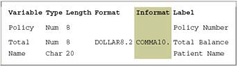

Overview
Introduction
To program effectively using SAS, you need to understand basic concepts about SAS programs and the SAS files that they process. in particular, you need to be familiar with SAS data sets.
In this chapter, you'll examine a simple SAS program and see how it works. You'll see how SAS data sets are stored temporily or permanently in SAS libraries. You'll also learn details about SAS data sets, which are files that contain data that is logically arranged in a form that SAS can understand.
Objectives
In this chapter, you will learn about
- the structure and components of SAS programs
- the steps involved in processing SAS programs
- SAS libraries and the types of SAS files that they contain
- temporary and permanent SAS libraries
- the structure and components of SAS data sets
SAS Programs
You can use SAS programs to access, manage, analyze, or present your data. Let's begin by looking at a simple SAS program.
data clinic.admit2;
set clinic.admit;
run;
proc print data = clinic.admit2;
run;
This program creates a new SAS data set from an existing SAS data set and then print a listing
of the new data set. A SAS data set is a data file that is formatted in a way that SAS can understand.
Let's see how this program works.
Components of SAS Programs
our sample SAS program contains two steps: a DATA step and a PROC step.
data clinic.admit2;
set clinic.admit;
run;
proc print data = clinic.admit2;
run;
These two types of steps, alone or combined, form most SAS programs.
| A SAS program can consist of a DATA step | |
| or a PROC step | |
| or any combination of DATA and PROC steps | |
DATA steps typically create or modify SAS data sets. They can also be used to produce custom designed reports. For example, you can use DATA steps to
- put your data into a SAS data set
- compute values
- check for and correct errors in your data
- produce new SAS data sets by subsetting, merging and updating existing data sets
PROC(procedure) steps are pre-written routines that enable you to analyze and process the data in a SAS data set and to present the data in the form of a report. PROC steps sometimes create new SAS data sets that contain the results of the procedure. PROC steps can list, sort, and summarize data. For example, you can use PROC steps to
- create a report that lists the data
- produce descriptive statistics
- create a summary report
- produce plots and charts
Characteristics of SAS Programs
Next let's look at the individual statement in our sample program. SAS programs consists of SAS statements. A SAS statement has two important characteristics:
- It usually begins with a SAS keyword
- It always ends with a semicolon
As you've seen, a DATA step begins with a DATA statement, which begins with the keyword DATA. A PROC step begins with a PROC statement, which begins with the keywod PROC. Our sample program contains (1) a DATA statement, (2) a SET statement, (3) a RUN statement, (4) a PROC PRINT statement and (5) another RUN statement.
| Statements | Sample Program Code |
|---|---|
| (1) a DATA statement | data clinic.admit2; |
| (2) a SET statement | set clinic.admit; |
| (3) a RUN statement | run; |
| (4) a PROC PRINT statement | proc print data = clinic.admit2; |
| (5) another RUN statement | run; |
Layout for SAS Programs
SAS statements are in free format. This means that
- they can begin and end anywhere on a line
- one statment can continue over several lines
- several statements can be on a line
Blanks or special characters separate "words" in a SAS statement.
| Note | You can specify SAS statements in uppercase or lowercase. in most situations, text that is enclosed in quotation marks is case sensitive |
|---|
You've examined the genral structure of our sample program. But what happens when you run the program ?
Processing SAS programs
When you submit a SAS program, SAS begins reading the statements and checking them for errors.
DATA and PROC statements signal the begining of a new step. When SAS encounters a subsequent DATA,
PROC or RUN statement(for DATA steps and most procedures) or a QUIT statement(for some procedures),
SAS stops reading statements and executes the previous step in the program. In our sample program,
each step ends with a RUN statement.
data clinic.admit2;
set clinic.admit;
run;
proc print data = clinic.admit2;
run;
| Note | The begining of a new step(DATA or PROC) implies the end of the previous step. Though the RUN statement is not always required between steps in a SAS programs, using it can make the SAS program easier to read and debug, and it makes the SAS log easier to read. |
|---|
Log Messages
Each time a step is executed, SAS generates a log of the processing activities and the results of
the processing. The SAS log collects message about the processing of SAS programs and about any errors that occur.
When SAS processes our sample program, you see the log messages shown below. Notice that you get separate sets of messages for each step in the program.
SAS Log
1 data clinic.admit2;
2 set clinic.admit;
3 run;
NOTE: The data set CLINIC.ADMIT2 has
21 observations and 9 variables.
NOTE: The DATA statement used 1.03 seconds
4 proc print data = clinic.admit2;
5 run;
NOTE: The PROCEDURE PRINT used 0.2 seconds.
Results of Processing
Suppose you submit the sample program below.
data clinic.admit2;
set clinic.admit;
run;
proc print data = clinic.admit2;
run;
When the program is processed, it
- creates the SAS data set Clinic.Admit2 in the DATA step. The DATA step produces messages in the SAS log, but it does not create a report or other output.
- creates the following HTML report of the SAS data set Clinic.Admit2:
| Obs | ID | name | Sex | Age | Date | Height | Weight Actlevel | Fee |
|---|---|---|---|---|---|---|---|---|
| 1 | 2458 | murray, W | M | 27 | 1 | 72 | 168 HIGH | 85.20 |
| 2 | 2462 | Almers, C | F | 34 | 3 | 66 | 152 HIGH | 124.80 |
| 3 | 2501 | Bonaventure, T | F | 31 | 17 | 61 | 123 LOW | 149.75 |
| 4 | 2523 | Johnson, R | F | 43 | 31 | 63 | 137 MOD | 149.75 |
| 5 | 2539 | LaMance, K | M | 51 | 4 | 71 | 158 LOW | 124.80 |
| 6 | 2544 | Jones, M | 2M | 29 | 6 | 76 | 193 HIGH | 124.80 |
| 7 | 2552 | Reberson, P | F | 32 | 9 | 67 | 151 MOD | 149.75 |
| 8 | 2555 | king, E | M | 35 | 13 | 70 | 173 MOD | 149.75 |
| 9 | 2563 | Pitts, D | M | 34 | 22 | 73 | 154 LOW | 124.80 |
| 10 | 2568 | Eberhardt, S | F | 49 | 27 | 64 | 172 LOW | 124.80 |
You've seen the results of submitting our sample program. For other SAS programs, the results of processing might vary:
-
SAS programs often invoke procedures that create output in the form of a report, as is the case with the TABULATE procedure.
proc tabulate data = clinic.admit; class sex; var height weight; table sex*(height weight), mean; run;Mean Sex F Height 64.82 Weight 141.73 M Height 72.00 Weight 172.80 -
Other SAS programs perform tasks such as sorting and managing data, which have no visible results except for messages in the log. (All SAS programs produe log messages, but some SAS programs produce only log messages)
proc copy in = clinic out = work; select admit; run;
SAS Log
6 proc copy in = clinic out = work;
7 select admit;
8 run;
NOTE: Copying CLINIC.ADMIT to WORK.ADMIT (memtype=DATA).
NOTE: There were 21 observations read from the data set
CLINIC.ADMIT.
NOTE: The data set WORK.ADMIT has 21 observations and 9
variables.
NOTE: PROCEDURE COPY used (TOTAL process time):
real time 0.13 seconds
cpu time 0.08 seconds
| Note | You can turn off log messages by using system options, which you can learn about in chapter, Refrencing Files and Setting Options |
|---|
SAS Libraries
You've learned about SAS programs and SAS data sets. Now let's look at SAS libraries to see how SAS data sets and other SAS files are organized and stored.
How SAS Files are Stored
Every SAS file is stored in a SAS library, which is a collection of SAS files.
A SAS data library is the highest level of organization for information within SAS.
SAS libraries have different implementations depending on your operating environment, but a
library usually corresponds to the level of organization that your host operating system uses to
access and store files. In some operating environments, a library is a physical collection of files.
In others, the files are only logically related.
For example, in the Windows and UNIX environments, a library is typically a group of SAS files in
the same folder or directory.
The table below summarizes the implementation of SAS libraries in various operating environments.
| Environment | Library |
|---|---|
| Windows, UNIX OpenVMS(directory based-systems) | a group of SAS files that are stored in the same directory. Other files can be stored in the directory, but only the files that have SAS file extensions are recognized as part of the SAS library. (Refer to the online documentation for more information.) |
| CMS | a group of SAS files that have the same file type. |
| z/OS | a specially formatted host data set in which only SAS files are stored. |
Storing Files Temporarily or Permanently
Depending on the library name that you use when you create a file, you can store SAS files temporarily or permanently.
Temporary SAS libraries last only for the current SAS session.
Storing files temporarily:
If you don't specify a library name when you create a file (or if you specify the library name
Work), the file is stored in the temporary SAS data library. When you end the session, the
temporary library and all of its files are deleted.
Permanent SAS libraries are available to you during subsequent SAS sessions.
Storing files permanently:
To store files permanently in a SAS data library, you specify a library name other than the default
library name Work.
For example, by specifying the library name Clinic when you create a file, you specify that the file
is to be stored in a permanent SAS data library until you delete it.
| Note | You can learn how to set up permanent SAS libraries in Chapter, Referencing Files and Setting Options |
|---|
Refrencing SAS Files
Two-Level Names
To reference a permanent SAS data set in your SAS programs, you use a two-level name:
libref.filename
In the two-level name, libref is the name of the SAS data library that contains the file, and
filename is the name of the file itself. A period separates the libref and filename.
For example, in our sample program, Clinic.Admit is the two-level name for the SAS data set Admit, which is stored in the library named Clinic.
Referencing Temporary SAS Files
To reference temporary SAS files, you can specify the default libref Work, a period, and the filename. For example, the two-level name Work.Test references the SAS data set named Test that is stored in the temporary SAS library Work.
Alternatively, you can use a one-level name (the filename only) to reference a file in a temporary SAS library. When you specify a one-level name, the default libref Work is assumed. For example, the one-level name Test also references the SAS data set named Test that is stored in the temporary SAS library Work.
| Info | If the USER library is assigned, SAS uses the User library rather than the Work library for one-level names. User is a permanent library. |
|---|
Referencing Permanent SAS Files
You can see that Clinic.Admit and Clinic.Admit2 are permanent SAS data sets because the library name is Clinic, not Work.
So referencing a SAS file in any library except Work indicates that the SAS file is stored permanently. For example, when our sample program creates Clinic.Admit2, it stores the new Admit2 data set permanently in the SAS library Clinic.
Rules for SAS Names
SAS data set names
- can be 1 to 32 characters long
- must begin with a letter (A-Z, either uppercase or lowercase) or an underscore (_)
- can continue with any combination of numbers, letters, or underscores.
These are examples of valid data set names:
- Payroll
- LABDATA1995_1997
- _EstimatedTaxPayments3
SAS Data Sets
So far, you've seen the components and characteristics of SAS programs, including how they reference SAS data sets. Data sets are one type of SAS file. There are other types of SAS files (such as catalogs), but this chapter focuses on SAS data sets. For many procedures and for some DATA step statements, data must be in the form of a SAS data set to be processed. Now let's take a closer look at SAS data sets.
Overview of Data Sets
As you saw in our sample program, for many of the data processing tasks that you perform with
- access data in the form of a SAS data set
- analyze, manage, or present the data
Conceptually, a SAS data set is a file that consists of two parts: a descriptor portion and a data portion. Sometimes a SAS data set also points to one or more indexes, which enable SAS to locate records in the data set more efficiently. (The data sets that you see in this chapter do not contain indexes.)
Descriptor Portion
The descriptor portion of a SAS data set contains information about the data set, including
- the name of the data set
- the date and time that the data set was created
- the number of observations
- the number of variables
Let's look at another SAS data set. The table below lists part of the descriptor portion of the data set Clinic.Insure, which contains insurance information for patients who are admitted to a wellness clinic. (It's a good idea to give your data set a name that is descriptive of the contents.)
Data Set Name: CLINIC.INSURE Member Type: DATA Engine: V8 Created: 10:05 Tuesday, March 30, 1999 Observations: 21 Variables: 7 Indexes: 0 Observation Length: 64
Data Portion
The data portion of a SAS data set is a collection of data values that are arranged in a rectangular table. In the example below, the name Jones is a data value, the weight 158.3 is a data value, and so on.
Observations (Rows)
Rows (called observations) in the data set are collections of data values that usually relate to a single object. The values Jones, M, 48, and 128.6 constitute a single observation in the data set shown below.
Variable Attributes
In addition to general information about the data set, the descriptor portion contains information
about the attributes of each variable in the data set. The attribute information includes the
variable's name, type, length, format, informat, and label.
When you write SAS programs, it's important to understand the attributes of the variables that
you use. For example, you might need to combine SAS data sets that contain same-named
variables. In this case, the variables must be the same type (character or numeric).
The following is a partial listing of the attribute information in the descriptor portion of the SAS
data set Clinic.Insure. Let's look at the name, type, and length variable attributes. You'll learn
about the format, informat, and label attributes later in this chapter.
Variable Type Length Format Informat Label Policy Num 8 Policy Number Total Num 8 DOLLAR8.2 COMMA10. Total Balance Name Char 20 Patient Name
Name
Each variable has a name that conforms to SAS naming conventions. Variable names follow exactly the same rules as SAS data set names. Like data set names, variable names
- can be 1 to 32 characters long
- must begin with a letter (A-Z, either uppercase or lowercase) or an underscore (_)
- can continue with any combination of numbers, letters, or underscores
Type
A variable's type is either character or numeric.
- Character variables, such as Name (shown below), can contain any values
- Numeric variables, such as Policy and Total (shown below), can contain only numeric values (the digits 0 through 9, +, -, ., and E for scientific notation).
A variable's type determines how missing values for a variable are displayed. In the following data set, Name and Sex are character variables, and Age and Weight are numeric variables.
- For character variables such as Name, a blank represents a missing value
- For numeric variables such as Age, a period represents a missing value
| Name | Sex | Age | Weight |
|---|---|---|---|
| M | 48 | 128.6 | |
| Laverne | M | 58 | 158.3 |
| Jaffe | F | . | 115.5 |
| Wilson | M | 28 | 170.1 |
Length
A variable's length (the number of bytes used to store it) is related to its type.
- Character variables can be up to 32,767 bytes long. In the example below, Name has a length of 20 characters and uses 20 bytes of storage
- All numeric variables have a default length of 8. Numeric values (no matter how many digits they contain) are stored as floating-point numbers in 8 bytes of storage, unless you specify a different length
You've seen that each SAS variable has a name, type, and length. In addition, you can define format, informat, and label attributes for variables. Let's look briefly at these optional attributes- you'll learn more about them in later chapters as you need to use them.
Format
Formats are variable attributes that affect the way data values are written. SAS software offers a variety of character, numeric, and date and time formats. You can also create and store your own formats. To write values out using a particular form, you select the appropriate format.
For example, to display the value 1234 as $1234.00 in a report, you can use the DOLLAR8.2 format, as shown for Total below.
Usually you have to specify the maximum width (w) of the value to be written. Depending on the particular format, you might also need to specify the number of decimal places (d) to be written. For example, to display the value 5678 as 5,678.00 in a report, you can use the COMMA8.2 format, which specifies a width of 8 including 2 decimal places.
Informat
Whereas formats write values out by using some particular form, informats read data values in certain forms into standard SAS values. Informats determine how data values are read into a SAS data set. You must use informats to read numeric values that contain letters or other special characters.
For example, the numeric value $1,234.00 contains two special characters, a dollar sign ($) and a comma (,). You can use an informat to read the value while removing the dollar sign and comma, and then store the resulting value as a standard numeric value. For Total below, the COMMA10. informat is specified.
Label
A variable can have a label, which consists of descriptive text up to 256 characters long. By
default, many reports identify variables by their names. You might want to display more
descriptive information about the variable by assigning a label to the variable.
For example, you can label Policy as Policy Number, Total as Total Balance, and Name as
Patient Name to display these labels in reports.
You might even want to use labels to shorten long variable names in your reports. Assigning labels to variables is discussed in Chapter, Creating List Reports.
This data set has four observations, each containing information about an individual. A SAS data set can store any number of observations.
Variables (Columns)
Columns (called variables) in the data set are collections of values that describe a particular characteristic. The values Jones, Laverne, Jaffe, and Wilson constitute the variable Name in the data set shown below.
This data set contains four variables for each observation: Name, Sex, Age, and Weight. A SAS data set can store thousands of variables.
Missing Values
The rectangular arrangement of rows and columns in a SAS data set implies that every variable must exist for each observation. If a data value is unknown for a particular observation, a missing value is recorded in the SAS data set.
Summary
Text Summary
Components of SAS Programs
SAS programs consist of two types of steps: DATA steps and PROC (procedure) steps. These two steps, alone or combined, form most SAS programs. A SAS program can consist of a DATA step, a PROC step, or any combination of DATA and PROC steps. DATA steps typically create or modify SAS data sets, but they can also be used to produce custom-designed reports. PROC steps are pre- written routines that enable you to analyze and process the data in a SAS data set and to present the data in the form of a report. PROC steps sometimes create new SAS data sets that contain the results of the procedure.
Characteristics of SAS Programs
SAS programs consist of SAS statements. A SAS statement usually begins with a SAS keyword and always ends with a semicolon. A DATA step begins with the keyword DATA. A PROC step begins with the keyword PROC. SAS statements are in free format, so they can begin and end anywhere on a line. One statement can continue over several lines, and several statements can be on a line. Blanks or special characters separate "words" in a SAS statement.
Processing SAS Programs
When you submit a SAS program, SAS reads SAS statements and checks them for errors. When
it encounters a subsequent DATA, PROC, RUN, or QUIT statement, SAS executes the previous
step in the program.
Each time a step is executed, SAS generates a log of the processing activities and the results of
the processing. The SAS log collects messages about the processing of SAS programs and
about any errors that occur.
The results of processing can vary. Some SAS programs open an interactive window or invoke
procedures that create output in the form of a report. Other SAS programs perform tasks such as
sorting and managing data, which have no visible results other than messages in the log.
SAS Libraries
Every SAS file is stored in a SAS library, which is a collection of SAS files such as SAS data sets
and catalogs. In some operating environments, a SAS library is a physical collection of files. In
others, the files are only logically related. In the Windows and UNIX environments, a SAS library
is typically a group of SAS files in the same folder or directory.
Depending on the libref you use, you can store SAS files in temporary SAS libraries or in
permanent SAS libraries.
- Temporary SAS files that are created during the session are held in a special workspace that is assigned the default libref Work. If you don't specify a libref when you create a file (or if you specify Work), then the file is stored in the temporary SAS library. When you end the session, the temporary library is deleted
- To store a file permanently in a SAS library, you assign it a libref other than the default Work. For example, by assigning the libref Clinic to a SAS library, you specify that files within the library are to be stored until you delete them
Referencing SAS Files
To reference a SAS file, you use a two-level name, libref.filename. In the two-level name, libref
is the name for the SAS library that contains the file, and filename is the name of the file itself. A
period separates the libref and filename.
To reference temporary SAS files, you specify the default libref Work, a period, and the filename.
Alternatively, you can simply use a one-level name (the filename only) to reference a file in a
temporary SAS library. Referencing a SAS file in any library except Work indicates that the SAS
file is stored permanently.
SAS data set names can be 1 to 32 characters long, must begin with a letter (A-Z, either
uppercase or lowercase) or an underscore (_), and can continue with any combination of
numbers, letters, or underscores.
Overview of SAS Data Sets
For many of the data processing tasks that you perform with SAS, you access data in the form of
a SAS data set and use SAS programs to analyze, manage, or present the data. Conceptually, a
SAS data set is a file that consists of two parts: a descriptor portion and a data portion. Some
SAS data sets also contain one or more indexes, which enable SAS to locate records in the data
set more efficiently.
The descriptor portion of a SAS data set contains information about the data set.
The data portion of a SAS data set is a collection of data values that are arranged in a
rectangular table. Observations in the data set correspond to rows or data lines in a raw data file
or in an external database. An observation is the information about each object in a SAS data set.
Variables in the data set correspond to columns in a raw data file or in an external database. A
variable is the set of data values that describe a particular characteristic. If a data value is
unknown for a particular observation, a missing value is recorded in the SAS data set.
Variable Attributes
In addition to general information about the data set, the descriptor portion contains attribute information for each variable in the data set. The attribute information includes the variable's name, length, and type. A variable's type determines how missing values for a variable are displayed by SAS. For character variables, a blank represents a missing value. For numeric variables, a period represents a missing value.
Points to Remember
- Before referencing SAS files, you must assign a name (libref, or library reference) to the library in which the files are stored (or specify that SAS is to assign the name automatically)
- You can store SAS files either temporarily or permanently
- Variable names follow the same rules as SAS data set names. However, your site might choose to restrict variable names to those valid in SAS Version 6, to uppercase variable names automatically, or to remove all restrictions on variable names